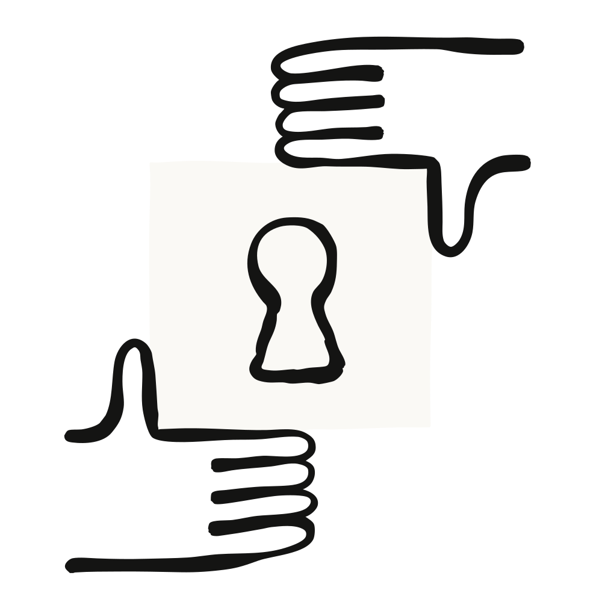
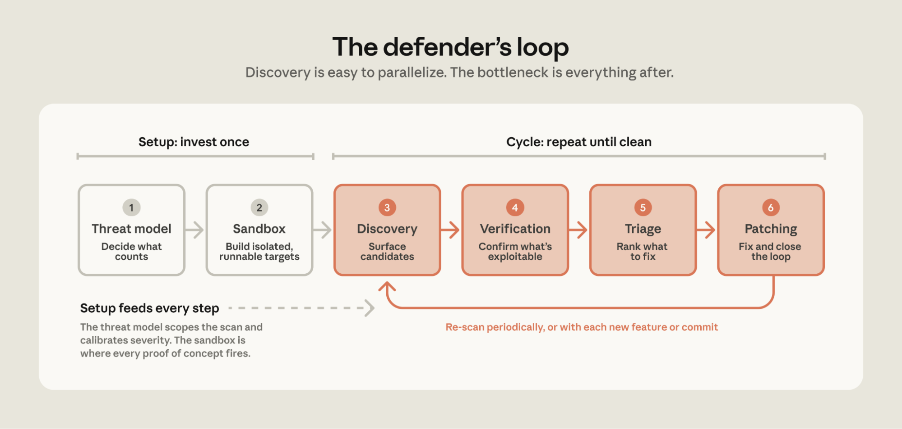
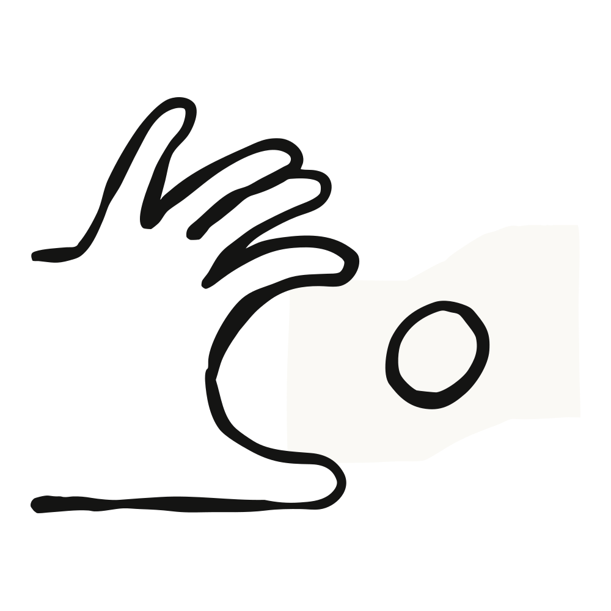

Using LLMs to secure source code
We share best practices for how you can work with Claude Opus to build a threat model, discover vulnerabilities in your codebase, then verify, triage, and patch them.
- CategoryEnterprise AI
- ProductNo items found.
- DateMay 27, 2026
- Reading time5min
- ShareCopy linkhttps://claude.com/blog/using-llms-to-secure-source-code
Model capabilities are advancing quickly, and unevenly. We’ve been working with security teams to find and fix vulnerabilities in their own code and open source software, and the work has given us a better understanding of how to use models to secure source code. Our primary takeaway: discovery is now straightforward to parallelize, and the bottleneck has shifted to verification, triage, and patching.
To give some indication of this discrepancy, as part of our own scanning of open source software, as of May 22, 2026, we had disclosed 1,596 vulnerabilities. To our knowledge, 97 of these have been patched.
This guide walks through how you can work with Claude Opus to build a threat model, discover vulnerabilities in your codebase, then verify, triage, and patch them. While we don’t have all the answers, we’ll share how teams have scaled discovery and what’s helped in the later stages. Get started today with the accompanying repo which includes skills for interactive workflows and a demo harness for autonomous scanning; we’ll call out the skill that implements each step as you read.
The find-and-fix loop
Teams finding and fixing the most vulnerabilities converged on a variation of existing best practices. We’ve distilled them into a sequence of six steps:
- Threat model: Decide what counts as a vulnerability before you start scanning.
- Sandbox: Build a sandbox environment to isolate agents and prove exploits.
- Discovery: Have models look for vulnerabilities in your source code.
- Verification: Independently confirm which findings are actually exploitable.
- Triage: Deduplicate findings, assign severity, and prioritize what needs fixing.
- Patching: Apply the fix, confirm the vulnerability is nullified, and search for variants.

The first two steps—building a threat model and a sandbox—are the setup for the rest of the loop. These are typically done once per codebase and revisited when the underlying system changes. The next four steps are the loop you’ll run against the source: discover, verify, triage, and patch.
The first run on a codebase typically has the highest number of findings. Subsequent runs tend to have fewer—though often more complex—vulnerabilities, as the simpler ones were patched in prior runs. However, don’t expect the nth run to have zero new findings. Models are stochastic, and a large codebase can have a long tail of vulnerabilities that continue to trickle in even when the code is unchanged.
On your first iteration with a codebase, you should run the loop multiple times, deciding when to stop based on the number of net-new findings and your risk tolerance for that system. After that first iteration, continue to scan (1) periodically or (2) whenever the code meaningfully changes.
Next, we’ll walk through each step in detail, explaining why it matters, what it produces, and how to implement it.
1. Threat model: Define what counts as a vulnerability
The most common cause of false positives is that the model lacks a good understanding of your trust boundaries. The model might flag code as vulnerable because it assumes a client could send corrupted values or an attacker could control the config, even though these inputs are trusted in your environment. Conversely, the model might assume that an internet-facing service is internal-only and thus under-report true vulnerabilities. In both cases, the model is wrong about the threat model, not the code.
One team noticed a pattern across their findings: the model performed best on systems with well-documented threat models, system design docs, requirements, and constraints. When the threat model was well-defined, the model's findings "were exploitable 90 percent of the time."
You can work with Claude to build a threat model in two steps:
First, bootstrap from the code, docs, and vulnerability history. Feed the model what you would hand a new security engineer on day one: architecture docs, wikis, entry points, git history, and past vulnerabilities. This helps overcome the challenge of inferring implicit knowledge, trade-offs, and design decisions from code alone. Then, ask the model to create a threat model that includes the system context, assets, entry points, and trust boundaries. Finally, have the model cluster past bugs and list the relevant vulnerability classes. Make sure the threat model documents what vulnerabilities you do and don’t care about, and why.
One team reviewed hundreds of past CVE and security-fix commits, distilled them into "bug-shape" hints, and asked the model two questions: was the fix complete, and was it applied everywhere else? They found three exploitable issues in an hour. As they put it: "'What have people exploited in the past' is sometimes a much easier cheat-code towards success than 'find me vulnerabilities in this codebase.'"
Second, have the model interview someone who knows the system well. Consider Shostack's four questions: What are we building? What can go wrong? What are we doing about it? Did we do a good job? Run the bootstrap step first so the interviewee isn’t starting from scratch. This way, instead of spending hours researching and building a threat model from scratch, they can start from a draft. And while the interview step is optional, it adds context the model can’t get from the code or docs, which improves the threat model.
A few practices can make a big difference:
- Consider your dependencies’ security policies. Many open-source projects publish one. For example, vLLM’s
security.md, SQLite's "Defense Against the Dark Arts", and ImageMagick's security policy. Your threat model should consider them directly instead of rebuilding a policy from scratch. - Name what is trusted. If you trust config files or authenticated clients, document it in the threat model. These assumptions help separate non-exploitable bugs from actual exploits.
- Include a
THREAT_MODEL.mdwith the code. Have it in the repo and update it as code changes. The discovery agent can then read it before searching, skipping known non-issues.
You’ll use the threat model in two places. In discovery, as scope: partition the code, prioritize targets, and skip what is out of scope. This helps with large codebases you cannot scan entirely. In triage, as a filter: after scanning broadly, use the threat model to better calibrate severity to your system and environment.
One team scanning a large project had a 40% false positive rate and dug into why. The findings were reproducible and the PoCs proved exploitability. But the dev team who owned the code dismissed them as false positives because the bugs didn't fit the project's threat model. Another team's CISO put it succinctly: "[The model has] good context of the code, but not good context of us."
Try the threat-model skill. It walks through both steps described in this section—bootstrap derives a draft from your code, CVEs, and git history, and interview walks a system owner through Shostack’s four questions to refine it. The output is a THREAT_MODEL.md file which is used in the Discovery and Triage steps.
2. Sandbox: Run agents safely and verify exploitability
One purpose of the sandbox is to protect your systems. To enable models to run safely and autonomously, you need a strong isolation layer. Without it, the agent may overshoot the target and do something unexpected.
One team told the model it had no network access—when it actually did—and the model discovered it could fetch from GitHub anyway. Another team observed an agent answer a GitHub issue mid-scan. Neither action was malicious, but both demonstrated the need to enforce constraints via code and configuration.
Match the isolation to your threat model. Containers are fine for the discovery agent reading code, but run the target and its PoCs in a microVM (like Firecracker) or a full VM with egress locked down so nothing can reach your production systems. And never have credentials (~/.aws, ~/.ssh, .env) available to the agent.
Give the sandbox network access only while you’re setting it up. Pull the dependencies, build, install tools, deploy the target, and run the existing tests to confirm everything works. Then, snapshot the environment and remove its network access. During scanning, allow traffic only to the model API, routed through a local proxy. Load the snapshot at the start of each run so every scan begins from the same clean slate.
Another purpose of the sandbox is to prove exploitability. During static scanning, the model reads code and hypothesizes what might break, but it cannot test if a path is reachable or if there's a compensating control. As a result, the model might flag unexploitable code-correctness bugs that you don’t actually care about. When teams built a sandbox where the agent could compile code, run tests, and detonate a proof of concept, non-exploitable findings dropped significantly.
One offensive-security team built a harness that gives the agent a test bed, with a simple verification rule: it’s only a true positive if the agent can build a proof of concept and run it on the test bed. Their assessment after six weeks was that "the biggest efficacy lever has been giving the model test beds, live systems, and running the PoCs."
When building sandboxes, pin as much as you can so every run uses the same code in the same environment: image tags, commit SHAs, dependencies, and build commands. Cache a local copy so the build requires no network, and aim for the container to be durable so multiple testing loops can just load it.
One team's scan flagged a vulnerability that turned out to be a byproduct of the agent downloading an older version of the library instead of what was actually deployed. This was caught by an engineer who read the transcript and spotted that a different dependency was being downloaded. They now build Docker containers with dependencies pinned to match production, so the finding agent and the verification agent operate on the same artifacts an attacker would.
It’s important to build sandboxes that are faithful enough to production. Excluding dependencies (like a queue or datastore) can lead to under-reporting bugs that may exist in production. Conversely, ignoring production defenses (like a WAF or auth gateway) leads to the model reporting unexploitable findings that your prod environment already mitigates.
Nonetheless, if building a representative sandbox is impractical because of cloud dependencies, data stores, or other real-world complexities, start with the discovery step (below) instead. You don’t necessarily need to run PoCs in a sandbox. Frontier models are good at finding vulnerabilities from just analyzing source code. Several teams, including our own, have found this effective. The trade-off is in the verification phase, where without a running target we can’t prove findings with a PoC, so budget more time for verification. You can also invest in the sandbox later, once the volume of findings justifies it.
Refer to the harness README.md for a reference sandbox. In this implementation, agents and targets run in gVisor-isolated containers with egress locked to the model API. The target is built from a Dockerfile pinned to a specific commit, with setup_sandbox.sh handling the setup phase.
3. Discovery: Provide rich context, shorter prompts, and useful tools
Give the discovery agent access to context it can load as needed, such as the threat model, architecture docs, and results of past scans. When the agent understands your trust boundaries and how the system is actually deployed, it can better identify vulnerabilities specific to your system.
We’ve found frontier models to benefit from increasingly simple prompts during the discovery phase. Counterintuitively, more prescriptive prompts make discovery worse—long checklists tend to reduce the model’s creativity and generate fewer novel bugs. Here are some prompting tips that helped in the discovery phase:
- Provide the goal and context. Indicate the “why” and “what”—why you’re scanning, what a finding that matters looks like, what system is being scanned—and leave “how to scan for vulnerabilities" to the model. Frontier models are increasingly good at security tasks and being overly prescriptive can narrow what they try.
- Try asking for a specific vulnerability class. If you’d like to focus on a specific type of vulnerability guided by prior CVEs or the codebase’s language, say that. Describe the vulnerability class, what it does and where it tends to live, so the model can recognize it in your codebase.
- Define the output. Ask for a structured report with predefined fields, and order them so the model’s reasoning builds on each field. Example fields include rationale, finding, impact, severity, etc. Include an escape hatch so the model can exit early for weak findings.
Give the model tools to search through and read the codebase, such as grep, glob, etc. Also let the model use security-specific tools your team might use such as SAST scanners or fuzzers. Ask the model what tools are needed for a specific task and make them available. Finally, let the model build tools as needed: recent frontier models are increasingly good at writing the tools they need.
In addition to source code, one pentesting team gave the discovery agent tools to send requests, check the responses, and query traffic logs. As a result, the agent didn’t need to guess whether a path could be reached and could test each candidate against the running application as it went, improving their true-positive rate to nearly 100 percent.
Have the model do a first pass over the system to partition the search space, such as by attack surface, endpoint, or component. Then, feed those partitions to parallel discovery agents so they don’t converge on the same shallow bugs. Finally, run a system-level pass that takes the partition-level findings as context to search for vulnerabilities.
Teams that tried to brute-force discovery quickly hit diminishing returns. From one team: "We initially tried to just horizontally scale and send more agents, but saw limiting returns." Another increased the number of focus areas and parallel agents and got "tons of issues", most of them duplicates of each other.
If you have a sandbox to run the target, ask the discovery agent to build a PoC of the finding, such as a script, a crashing input, or a failing test. Building the PoC helps the agent iterate and pin down the finding, and the artifact gives the verification agent concrete evidence to evaluate. Nonetheless, findings the agent can’t reproduce can still be reported, flagged as unproven, so you keep recall high.
The vuln-scan skill is helpful in this stage. It reads your THREAT_MODEL.md, partitions the target into focus areas, and fans out parallel review agents per area. The output is structured findings the next steps consume directly.
4. Verification: Filter out non-exploitable findings
Discovery optimizes for recall; verification optimizes for precision. In other words, discovery should find as many vulnerabilities as possible—even unlikely ones—and verification should exclude findings that are not actually exploitable. When an agent tries to do both in the same step, it can self censor and exclude exploitable true positives. We learned this the hard way, where asking discovery agents to also verify findings led to them filtering out true positives that a separate verification step would have confirmed.
The verifier agent should be independent from the discovery agent. Run the verifier in a fresh container without a shared filesystem or conversation history. If the verifier is exposed to the discovery agent’s reasoning, it may simply agree instead of testing the claim. Thus, give the verifier only (1) the proof of concept or written finding and (2) the codebase, so it can search for mitigations the finder missed (e.g., upstream validation, auth gates, type constraints, or unreachable code).
If a single verification pass still lets too many unexploitable findings through, try running multiple independent verifiers. They can consider different angles or run with different models. Then, take the majority vote. Also consider having a separate judge to decide between the discovery and verification agents’ results.
Prompt the verification agent to disprove the discovery agent’s findings. Have the verifier assume each finding is a false positive and search for reasons the finding is wrong. Include clear criteria that the verifier agent can use to determine if the finding is a true positive. This matters most when the discovery agent’s output doesn’t include a PoC. Aim to exclude as many non-exploitable findings as possible to reduce effort on manual reviews.
Across the teams we’ve worked with, adding an adversarial verifier roughly halved the rate of non-exploitable findings from the discovery phase. Requiring that verifier to also build a proof of concept confirming the exploit brought the false positive rate to near zero. Together, these two steps helped to reduce the downstream triage and patching load significantly.
If you’re able to sufficiently reproduce your production environment in a sandbox (see step 2), prompt the verifier agent to build and execute a reproducible proof of concept (PoC). If the PoC works, you can conclude the finding is exploitable. Note that the inverse isn’t true—failure to produce a working PoC is not proof of a false positive.
One team scanning open-source packages built a verification step that helped to close the loop: scan the package, generate a proof of concept, then deploy a mock application that uses the package and triggers the PoC. Their take was that: "Validation is the biggest holdup and the PoC is the validation."
5. Triage: Deduplicate by root cause, rank by preconditions and impact
While verification confirms a finding is exploitable, triage assesses patching priority. Previously, when discovery took more effort, the engineer who found the bug also triaged it. Now, with models capable of finding a hundred candidates before lunch, triage has become the bottleneck.
Proper triage helps prevent alert fatigue. If you submit too many bugs that are duplicated or have an inflated severity, product engineers may stop reading them, even the ones that need immediate patching. Open source maintainers are especially likely to be overwhelmed by untriaged findings since they receive reports from many different users that rely on their software.
Multiple teams shared the same lesson: if we send product engineers a pile of findings where a majority are non-exploitable, they will lose trust in the reports and give up. They also prioritize critical and high findings to avoid overwhelming the engineers downstream. Other teams found a win by pointing the model at their existing backlog—open findings from prior scanners, prior models, bug-bounty intake—and cleared hundreds of stale items in days.
To deduplicate findings, consider the root cause. Scanners often flag one bug at multiple call sites or report multiple symptoms of a single root cause. Here’s one practical approach: First, use a cheap deterministic pass: same file, same category, vulnerability line numbers within ten lines of each other. Then, have a model apply qualitative rules to what remains:
- Treat as duplicate: the same root cause worded differently; the same vulnerability reported at multiple call sites; a missing global protection (like an auth check) reported per endpoint; or a cause and its consequence flagged in the same path.
- Treat as distinct: different vulnerability classes in the same file; different variables reaching different sinks; two independent bugs inside one helper; the same missing check on two endpoints, but each requires its own fix.
If your harness generates PoCs and patches for each finding, another approach to deduplicate findings is to check if the patch for one finding also disarms the PoCs of others.
After deduplication, rate the severity of each finding based on:
- Reachability. Can an attacker reach this code from a real entry point, or is it only reachable from internal code and endpoints?
- Attacker control. Does untrusted input reach the sink intact, or does something upstream sanitize or constrain it?
- Preconditions. What has to be in place for the bug to trigger: a non-default setting, a specific feature flag, a narrow time window the attacker has to hit?
- Authentication. Can an unauthenticated attacker trigger it, or does it require a logged-in user or an admin?
- Read vs. write. Can the attacker only read data, or also modify it?
- Blast radius. If the PoC fires, who is affected? One user or all users, one tenant or the platform, userland or the kernel?
To turn the rubric into a score, have the model write out its answer to each question before assigning a severity. Going through the evidence first keeps the model from anchoring on the bug class (“SQL injection, so critical”) and then inflating the severity to match. As a starting point: zero preconditions with unauthenticated remote access is critical or high severity. One or two preconditions, or an authenticated path, is medium. Three or more, or local-only, is low. Adjust the thresholds to your system.
Models may inflate severity because they have insufficient context. They may not know what inputs an attacker actually controls, or they cannot see compensating controls. As an example of the former, a SQL injection is critical if triggered by an unauthenticated request but a non-issue if triggered by an admin-only config file. For the latter, upstream WAF or authentication that prevent exploits may not be visible from the source code alone.
The solution is to provide a threat model during triage that tells the model which types of vulnerabilities you do and don’t care about in your system. For example, clarifying that "we trust authenticated clients" can simplify or remove a whole class of criticals.
One team found the model is often overconfident unless grounded in something to verify, or has more context on whether something is expected as part of the threat model. Their fix was to give the triage agent the same threat model the discovery agent gets.
Try the triage skill. It does both verification and triage: multi-vote verification per finding, deduplication across runs, and re-ranking by derived exploitability. The output is a short, ranked, owned list instead of a raw dump.
6. Patching: Close the loop and improve context for the next cycle
Patching is where you close the loop and fix the vulnerabilities. It also helps to improve the threat model based on verified findings—updating trust boundaries or components that need more scrutiny—and feed past findings into the next scan’s context. Each cycle hardens the codebase and makes the next scan better informed.
Before patching, write a new test that fails with the existing code. Then, implement the fix and confirm the same test now passes without breaking anything else. (Yes, it’s test-driven development). If you don't add a test, the fix can silently regress and it can be hard to retroactively prove the bug was real.
One pentester found that their generated patches were inconsistent—some good, some bad—until the harness told the model to validate patches by re-running the proof of concept against the patched code. By giving the model feedback to iterate against, patch quality jumped, saving time on human review.
Models may narrowly address findings at a specific call site instead of the root cause. Simply prompting the model to identify and fix the root cause can be effective. Then, have the model look for variants at two levels: (1) same pattern, where there are other call sites or copies of the same buggy code elsewhere, and (2) same class, where a codebase with one SQL injection vulnerability tends to have more SQL injection vulnerabilities. Update the threat model with the validated findings and patches to close the loop.
Before you ship the patch, run an adversarial check. Have a new discovery agent probe the patch as an attacker to confirm the patch is comprehensive. Then, simplify the generated patch to address patches that are too invasive. Minimal patches are easier to review and less likely to introduce new bugs. Prompt for the smallest change that fixes the root cause—no refactoring, no drive-by cleanups, no reformatting.
One team on their most common patch failure: "The recommended patches tend to be as restrictive as possible, to the point that they would break connections with other services. It would address the issue, but break the dependencies that allow the service to work in the first place."
You can validate each patch against a ladder of checks, starting with the cheapest:
- Build. The patch compiles and the new tests pass.
- Try to reproduce. The original PoC should stop working. This catches ineffective patches.
- Check for regressions. The original test suite still passes. This catches broken or over-restrictive patches.
- Re-attack. A fresh discovery agent runs an adversarial check. This catches incomplete patches.
Finally, while the model can write the patch, a human still needs to own it. Generated patches can fail in predictable ways—fixing the symptom instead of the root cause, blocking legitimate input, or removing access to a dependent service. The goal is to validate each patch as much as possible so human review requires less effort. The goal is to help the dev team focus on nuances the model might be unaware of (e.g., incoming changes, code style) with minimal review and updates needed to patches.
Try the patch skill. It consumes the triage output and generates a candidate diff per finding, with an independent reviewer agent checking each one.
Getting started
Try running the loop yourself. Clone defending-code-reference-harness and run /quickstart in Claude Code. It walks you through an interactive workflow, from threat modeling to scanning to triage, on a demo target. The repo also includes an autonomous harness and a /customize skill to update the harness for your environment.
Then, run it on your own code. Pick a service or package. Bootstrap a threat model from the code and docs, and go through the interview. Invest in building a sandbox of your environment. Scan. Verify the findings with an independent agent. Triage based on your criteria and review everything rated high and above. Patch. Then re-scan periodically.
Your first scan will surface more findings than you’d expect. Most will require verification and triage. Budget for the pipeline after the scan before you budget for more scanning.
Some resources you might find helpful:
- Claude Security: Anthropic’s managed product for agentic vulnerability detection and patching.
defending-code-reference-harness: Companion repo with skills for interactive workflows and a demo harness for autonomous runs.claude-code-security-review action: Github action with Claude as a security reviewer on every pull request.- Threat Intelligence Enrichment Agent: Cookbook to build an agent that enriches indicators of compromise against threat intel feeds.
- Vulnerability Detection Agent: Cookbook to build an agent that builds a threat-model, scans for vulnerabilities, and triages findings into a structured report.
Moving forward
We believe it’s getting easier for models to find and exploit vulnerabilities in code. Thus, our work as defenders is to find and fix the vulnerabilities in our code before adversaries exploit them. Some teams have gone as far as connecting their harnesses to events, where a bug bounty report triggers an automated variant analysis, a security review triggers scanning and has candidate findings attached, or a verified vulnerability updates the static analysis tooling to prevent it in the future.
The work is critical and high stakes. But done right, it’s the start of a larger, more hopeful shift, where we’ll be able to find and fix vulnerabilities before attackers exploit them.
If you’d like to stay connected to our work on cybersecurity, please sign up to our mailing list, here.
Acknowledgements
Written by Eugene Yan and Henna Dattani, with contributions from Michael Molash, Abel Ribbink, Justin Young, Ben Morris, David Dworken, and Hasnain Lakhani. This work draws upon our experiences working with models for security at Anthropic and the valuable insights shared by our partners and customers, for which we’re deeply grateful.
No items found.
0/5
eBook
FAQ
No items found.
Related posts
Explore more product news and best practices for teams building with Claude.

Aug 11, 2026
Compliance API coverage extends to Claude Cowork and Claude Code
Enterprise AI
Compliance API coverage extends to Claude Cowork and Claude Code
Compliance API coverage extends to Claude Cowork and Claude Code

Jun 5, 2026
The Claude Cowork product guide
Enterprise AI
The Claude Cowork product guide
The Claude Cowork product guide

May 22, 2026
How Anthropic's finance team uses Claude to shape the narrative behind the numbers
Enterprise AI
How Anthropic's finance team uses Claude to shape the narrative behind the numbers
How Anthropic's finance team uses Claude to shape the narrative behind the numbers

Aug 7, 2026
How Anthropic's business development team uses Claude to run inbound and outbound at scale
Enterprise AI
How Anthropic's business development team uses Claude to run inbound and outbound at scale
How Anthropic's business development team uses Claude to run inbound and outbound at scale
Transform how your organization operates with Claude
See pricing
Contact sales
Get the developer newsletter
Product updates, how-tos, community spotlights, and more. Delivered monthly to your inbox.
Thank you! You’re subscribed.
Sorry, there was a problem with your submission, please try again later.